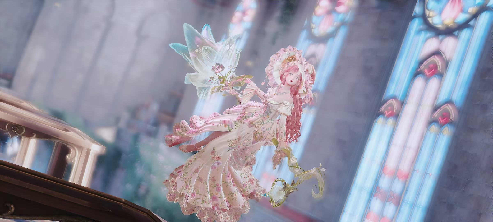
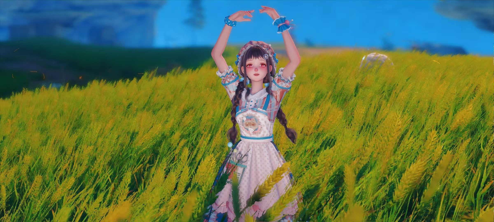
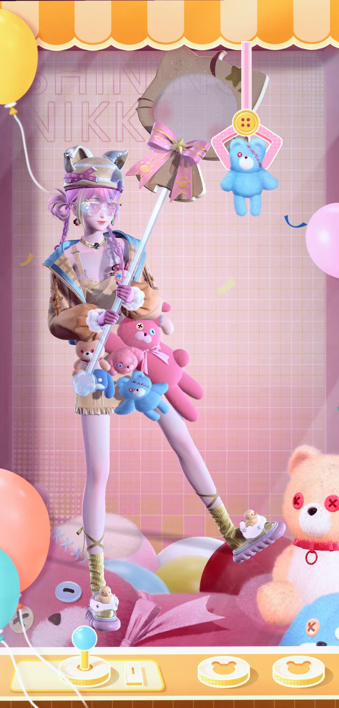

📷 图文记录

第一套展示的衣服，是无限暖暖的女巫套二进，这是我第一次抽二进的衣服，完全是被暖暖粉的美貌折服了。
这张照片的诞生，源于我在研究一进的拍照动作时，发现该动作的入场是先骑一会扫帚飞行，这让我马上就想：能不能拍出一个暖暖正在飞行的照片？而且光是飞行还不够，我希望拍摄的画面具有张力，例如从裙摆的方向感受到流动的风，倾斜的景物带来不平衡感的同时也作为引导线。于是这张照片就这么诞生了。
当然，这是手机端拍摄的照片，所以在精度上，只能说是差强人意。

这张照片的拍摄时间也是在无限暖暖1.10版本“丰收季”前后拍摄的，同样是使用了一个套装，然后换了一下头发，并且稍微染一下色。
这个拍摄的思路很简单，就是看到1.10版本麦田将要成熟了，于是马上前来麦浪农场进行拍摄，一开始觉得手机端精度应该不会很高，没想到把场景虚化一下，倒也能看得过去。

这个就完全是我自己搭配的y2k风格的套装了。由于张家衣联动有一套y2k风格的累充，所以在上线之前，我也心血来潮地自己进行了一下搭配
首先选择的是连衣裙，裙子上挂着诸多玩偶，再加上活力满满的黄色，很显然恰恰就是y2k风格的衣服。选择完连衣裙之后，搭配风格也就自然而然确定下来了：活泼可爱，虽然很常见但是百看不厌的风格。
之后搭配的是外套，因为衣服只有两个带子挂到肩上，而手套里面又没有足够跨专的，所以选择了一个风格、配色相契合的外套来让上半部分看起来“重”一点。之后选择一个足够可爱，但是更要带有一丝丝俏皮的头发。后续就是饰品的搭配，面饰倒是没花什么力气，不过帽子倒是找了一会，最后还是选择了和头发一个套装的帽子（当然，其它部件要么是散件，要么不是一个套装，我还是认真搭配了的！）
至于鞋子和袜子，也是按照风格选择契合的、鞋子选了一个洗澡套的泡泡鞋，袜子是按照配色选择了一个长度适中的，一开始选的是过膝袜，然而显得太长了，最后敲定要一个短袜，果然选择后才总体上看效果确实不错。至于手持，也是纠结了一会后选择了一个能挡住穿模的，哈哈，你们看不出来吧！
其实搭配完后我还挺满意的，刚好拍照的模版也适合，于是就拍出了这张照片，还不错吧，嘻嘻！